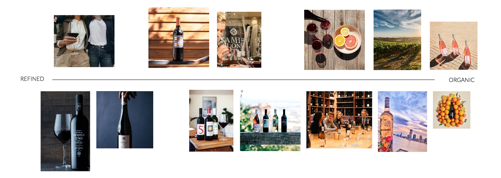

VINO is a wine club that brings together wine enthusiasts and artisan producers. By purchasing a yearly membership, VINO members have access to an exclusive selection of artisan wine, free master classes with winemakers, and community events.
I designed a membership onboarding flow for VINO's app.

Design Challenge
Design a membership onboarding flow that converts 500 wine enthusiasts into VINO club members within the first quarter of launching the web and mobile platforms.
1. Research
Competitive analysis
I explored the features, design, and messaging of several other wine shops/clubs, including Vinebox, Winc, Tasting Room, Pour This, and Plonk. Some insights:
- Other wine clubs are more focused the wine bottle itself, not the people you would meet
- Most wine clubs are targeted towards millenials, as older customers have different buying behaviors.
- Wine clubs try to make buying wine a more customized experience by asking customers what they like during their onboarding flow.
User research
Before designing, I would ideally conduct a user research study with our target audience to determine:
- What value do people currently gain from wine clubs?
- What are the main advantages, as well as pain points, of belonging to a wine club?
- What are people’s behavior patterns around consuming or gifting wine?
- What are people’s behavior patterns around buying wine online vs. in shops?
3. Key insights and design principles
These are principles I kept in mind throughout designing given the brief, my research, and past experience:
- Provide value to the user before asking them to do anything. Allow users to see/experience a VINO membership before signing up.
- Focus messaging and design on VINO’s main value proposition: community and inclusiveness. These are more important than periphery benefits like cost transparency and shipping.
- Target a millennial consumer audience that loves to share. Successful wine clubs have recently pivoted to cater to a growing millennial, photo-sharing “Generation Me” audience.
4. UX
Keeping my design principles in mind, I first wrote the story/flow I wanted to take the user through on sketches.
5. Visual exploration
After putting a basic structure in place, I explored multiple visual styles along a spectrum between refined/formal/heritage to organic/casual/contemporary.
6. Design
After putting a basic structure in place, I explored multiple visual styles along a spectrum between refined/formal/heritage to organic/casual/contemporary.
- Design style: The organic/casual/contemporary looked most appropriate for VINO’s millennial audience and emphasis on community.
- Font and color: In order to maintain a balance between the warmth of VINO’s community and the formality of wine-drinking, I used a wine red accent color and a combination of serif and sans-serif fonts.
- Photography: I used photography to depict the human element of VINO’s community in a relatable, believable way.
- Copy: Given VINO’s value proposition, my copy is intended to be conversational, inclusive, and welcoming.